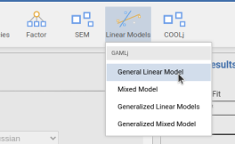

GAMLj Models
2023
Chapter 1 Introduction
1.1 Preface
Draft version, mistakes may be around
Here you can find a how-to about estimating and interpreting several different types of linear models in jamovi, using the GAMLj module. This book is halfway between a software manual and a statistical how-to. So, what regards the statistical reasoning and the model’s interpretation may apply to analyses done also with other software, although the practical steps to obtain the results with other software may be quite different, often more difficult, as compared with GAMLj.
This book, so far, covers the following models:
- The general linear model (2)
1.2 Getting Started
First, we need to install jamovi, and within it, install GAMLj.
To install jamovi, simple download it from the jamovi website.
Within jamovi, access the library and install GAMLj

Installing the module produces a new icon in the icons bar, and the new icon gives access to the list of the module available analyses.

We are ready to go.
1.3 Data
Throughout this book, we are going to use mostly two simulated datasets, containing variables that allow estimating different types of effects for different types of models. Both datasets contain two continuous independent variables, named x and z, two categorical independent variables, named cat2 and cat3, with two and three groups respectively. The dependent variable y appears in different forms or type, so we can apply to it different models. We have a continuous normally distributed dependent variable ycont, a dichotomous version of it ybin, a count version ypoi simulating a Poisson distribution of counts, a ordinal version yord with 5 ordinal levels, and ycat, a three-level categorical variable.
The first dataset containing these variables is called manymodels and simulates a sample of 120 cases drawn randomly for a population. We are going to use this dataset for the general linear model and the generalized linear models. The second dataset, named clustermanymodels has the same variables, but the data a simulated as drawn from 30 different clusters. We are going to use this dataset for the mixed model and the generalized mixed models.
I agree with the idea that \(x\), \(y\), and \(z\) datasets are boring, and real data examples are more engaging. Nonetheless, \(x\), \(y\), and \(z\) datasets allow us to explore many different situations that real data often do not (at least not with one or two datasets), and do not take away the reader’s attention from the stats.
Both datasets can be opened from jamovi data library.
1.4 What’s in a name
All the fundamental analyses presented in this book are referred to as models. With the term model I mean a concise and efficient way to represent and quantify the relationships among variables. A simple regression, an ANOVA, or a multi-level random coefficients logistic regression are all models of the data. To put it in a more elegant way, a model provides an approximate and idealized representation of the process generating the data Neyman (1957). In several statistical and methodological sources these models are called statistical techniques, but I do not find this term helpful, because almost everything one does can be a technique. To avoid confusion, we call models the linear representation of the dependent variable(s) as a function of the terms of the independent variables. Thus, we have different models when the linear representation is different, of the estimation method is different. A logistic model, for instance, is different from a Poisson model because the first predicts the logit of a dichotomous dependent variable, the second the log of it (more on this later).
In this book we cover four model categories:
- The general linear model (Chapter 2)
- The generalized linear model
- The mixed linear model
- The generalized mixed model
The main differences among them, at least the ones we are interested in, can be classified depending on the type of dependent variable they model and the way the sample has been drawn:
| Dependent Variable | ||
|---|---|---|
| Normal and Continuous | Non-normal or categorical | |
| Independent cases | General Linear Model | Generalized Linear Models |
| Clustered cases | Mixed Model | Generalized Mixed Models |
Clustered vs independent cases differ in the way the data are collected. We talk about it in Chapter (XX). In general, we will see for each model how and why one of these macro-categories applies.
1.4.1 Statistical techniques vs points of view
With a model, we can do many things. First, we evaluate the results. A linear model can always be evaluated from two different angles: The model fit (variances explained or deviance reduced) and the size and direction of the effects (the coefficients). Thus, whenever we estimate a model, we can look at it from each of these angles or both. The model fit, often broken down by variables and effects unique contribution, informs us about the ability of the independent variables to explain the variability of the dependent variable. This angle offers also effect size indices, like \(\eta^2\) or \(\omega^2\). This angle is useful, among other things, to evaluate the strength of the effects. In the linear model, this angle is called Analysis of Variance, shorted in ANOVA, in the generalized linear model it is called Analysis of Deviance (not shorted).
The second angle looks at the coefficients, which represent expected changes in the dependent variable as one compares different levels of the independent variable(s). They answer questions like “What is the average increase in salary for every year worked?”, or “what is the group with the largest salary among some employees groups?”. The coefficients angle also provides effect size indices, such as the \(B\) and the \(\beta\) coefficients, the correlation, and several variations of standardized mean differences (Cohen’s d). This angle is useful, among other things, to evaluate both the intensity and the direction of the effects.
In GAMLj, both points of view are available for all linear models handled by the module, no matter how complex they are. But this creates often confusion in users acquainted with old-fashion terminology. Why is there an ANOVA table in the results section of a regression? Why do I get regression coefficients for categorical independent variables? The reason is that in the linear model’s realm, terms such as regression or ANOVA are not analyses or statistical techniques, they are angles from which one looks at the results. If one is interested in the direction of the effects, one looks at the coefficients, if one is interested in the variability accounted for by the effects, one looks at the variances (or deviance). Thus, what people usually call ANOVA, meaning the analysis of a design with one continuous dependent variable and one or more categorical independent variables (factors), is just a general linear model evaluated only from the point of view of the explained variances. What people call regression is a general linear model with continuous independent variables for which the analyst focuses on the coefficients. ANCOVA? A general linear model with at least one focal categorical variable and at least one continuous variable, for which the analyst focuses on the effect of the categorical variable knowing that the continuous variable(s) is (are) kept constant. The same applies to any other model, general, generalized, mixed, or generalized mixed.
In this book we keep using terms such as regression or ANOVA, keeping in mind that we can do well without them.
1.4.2 Statistical techniques vs Analyses
Alright, so what do we mean by statistical techniques in this book? Things we do with the model. If we find a main effect of a categorical independent variable, we usually want to probe it and check which group is different from any other group. We employ a posthoc test technique. Along the way, we also want to see the estimated marginal means for each level of the independent variable. If an interaction appears solid in our results, we often probe it to estimate and test the effect of one variable at different levels of another, so we do a simple effects technique. In other cases, we want to compare one big model with a smaller one, in which some terms are absent. We do a model comparison technique, so we can evaluate the overall contribution of the effects that are in the big model and not in the smaller (nested) one.
GAMLj provides these techniques (and many others) for all models estimable within the module, with the same user interface and results tables. The basic principle that GAMLj tries to follow is that if we can do something in one model, we can do it with any other model.
1.4.3 Terms that we need to generalize
In the methodological literature, statistical techniques emerge often in one field for one application, and then emerge again in other fields or for other applications and get different names. This may create confusion. To clarify, we are going to use some simplification. The most important ones are the following:
Any ANOVA like results, not matter how they are tested (F-test, LRT, \(\chi^2\)), are referred to as Omnibus tests.
Moderation is an interaction in which the analyst focuses on one effect and desires to evaluated it at different levels of the other variable involved in the interaction, no matter whether the variable is continuous or categorical. A moderator is a variable that the analyst believes can change the effect of an independent variable, no matter the types of variable involved in the analysis.
Estimating the effect of one variable at different levels of a moderator is called Simple Effects, no matter the types of variable involved. So, slicing of an interaction in the (classical) ANOVA or a simple slopes analysis are all refereed to as Simple Effects technique (they are indeed the same technique).
Estimated marginal means are the average predicted values of a model for some level of the independent variables. No matter which model we have at hand, and what kind of variables we have, we always mean this.
1.4.4 Terms we need to cope with
In linear models, independent variables are of two kinds: categorical or continuous. The former defines nominal levels (groups or conditions) the latter defines quantities. Despite the simplicity of this definition, the majority of software available calls a categorical independent variable as factor and a continuous independent variable as coviariate. jamovi and GAMLj follows this tradition. We should be aware, however, that these terms do not mean anything else that categorical and continous variable. Every independent variable in a linear model is covariated (partialed out) when the other variable effect is computed, no matter whether the variable is a categorical or continuous one. How it is covariated, however, depends on the model, so we need to pay attention to that.
1.5 General References
Obviously, I did not invented any of the statistical ideas or methods that this book mentions. Much of this material comes from statistical common knowledge and logical necessity. However, when not otherwise specified, the fundamental concepts treated here can be found in the seminal work of P. Cohen, West, and Aiken (2014), Searle and Gruber (2016), Raudenbush and Bryk (2002), Agresti (1990), Aiken, West, and Reno (1991). When needed, specific references are provided for more novel or critical issues.